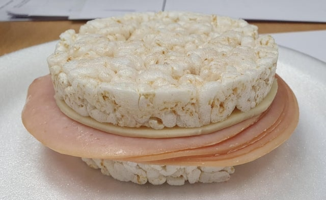

SaNdUcHe

Description
I feel that people get bored of their old sandwiches that use bread.
Bread is very outdated. Why not switch to rice cakes???
Ingredients
- 2 Puffed Crunchy Rice Cakes
- Slice of Cheese
- 3-4 Slices of Bologna
Steps
- Using a cookie cutter or knife, cut cheese into circle
- Assemble Sandwich: Put Bologna and Cheese in between rice cakes
- Go out on a walk and actually see the outside for once
Home Page